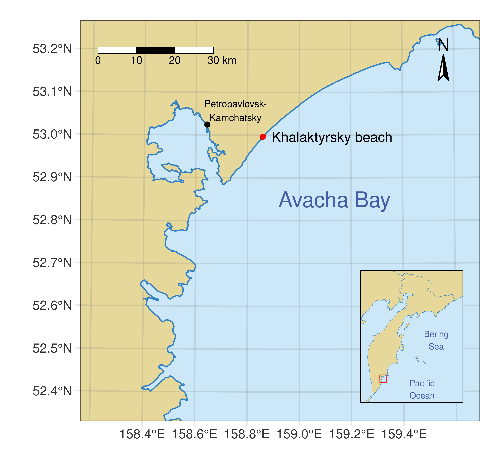
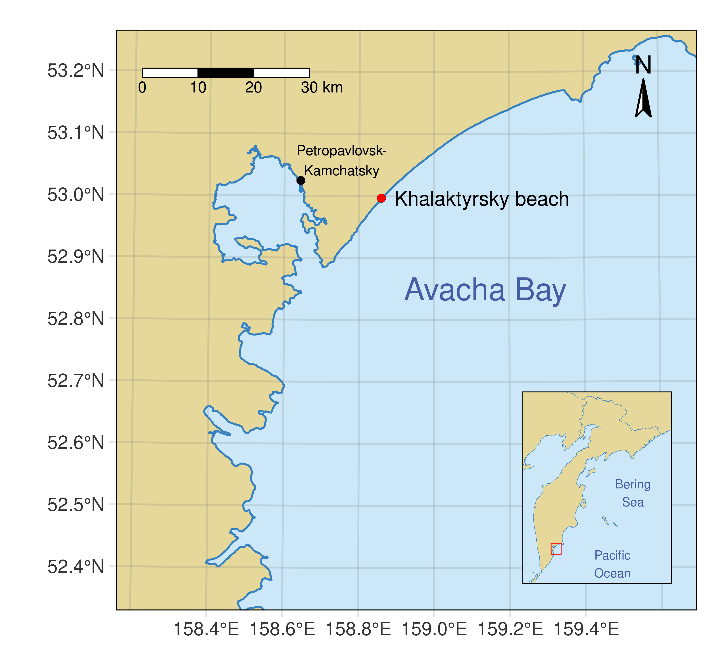
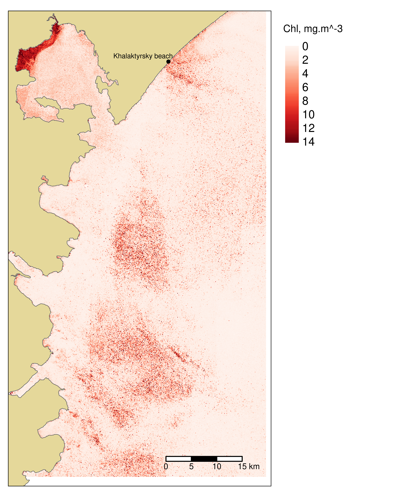
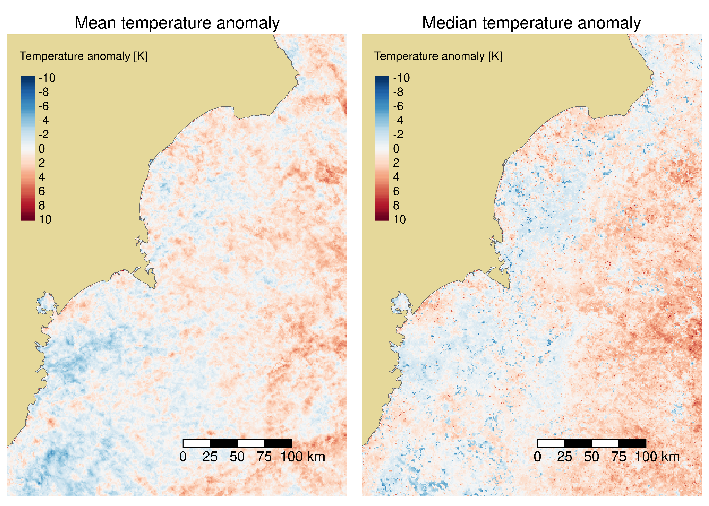

Remote sensing evidence for the harmful algal bloom explanation of the ecological situation in Kamchatka in autumn of 2020
Abstract
In this study, we investigated the remote sensing evidence of the harmful algal bloom at the coast of Kamchatka, a widely reported ecological disaster in the autumn of 2020. We analyzed time series of relative chlorophyll concentration anomaly maps derived from Sentinel-3 OLCI and Sentinel-2 MSI data and historical sea surface temperature data from Sentinel-3 SLSTR. Significant chlorophyll concentration anomaly values were observed during September and October of 2020. There was also a notable increase in sea surface temperature compared to earlier years. Both of these effects are indirect evidence for the presence of an algal bloom. Without any measurements, our results do not constitute an irrefutable case by themselves, but in conjunction with extensive on-site investigation reports, leave a harmful algal bloom as the only plausible explanation.
Introduction
At the end of September – beginning of October of 2020, an environmental disaster was widely reported in the Avacha Bay on the eastern coast of Kamchatka (Fig. 1). On September 29th, a storm washed many dead marine animals to the shore of Avacha Bay, which initiated an outcry over the media. In light of these events, reports of poisoning symptoms, skin and eye irritation from surfers on the Khalaktyrsky beach surfaced and added fuel to the growing public belief in unspecified anthropogenic pollution.

Several expeditions were sent to the site to investigate, most notably the group of researchers from the Far Eastern Federal University that later produced a report on their findings available on YouTube (Vinnikov 2020) (in Russian). Multiple explanations of the events were considered, both technogenic and natural, and they ultimately concluded that the most likely explanation is the bloom of toxic dinoflagellates. A harmful algal bloom explains both the poisoning symptoms in humans and the large-scale death of marine animals. The former can be caused by several toxins potentially present in some phytoplankton species, and the latter can result from blooms for many reasons (Richardson 1997).
Harmful algal blooms are not uncommon in Kamchatka: they are well-known and studied phenomena that occur every year with increasing frequency. In almost all coastal waters during summers and autumns, there is a risk of encountering toxic algae (Adrianov 2011). Nevertheless, the lack of knowledge about the phenomena among the general public led to the spreading of conspiratorial beliefs about a cover-up of a massive anthropogenic contamination over social media. That is one of the reasons we believe it is essential to conduct studies like ours using open data and open software, such as the Copernicus Programme’s Sentinel missions and the Sentinel Application Platform.
Most of the studies related to the detection of algal blooms use point in situ data to choose the best spectral index to extrapolate the observations over an area of interest. Since we do not have any in situ measurements, we used derived chlorophyll concentrations products instead of spectral indices. It is essential to consider concentrations only in the context of the overall trophic state of the water body of interest (German et al. 2017), so we recalculated them into the relative anomaly maps as described in (Wang et al. 2021).
Materials and methods
The primary data source for our analysis was the Sentinel-3 mission. We worked with a time series of chlorophyll concentrations from 76 level 2 OLCI products covering June to November 2020 (EUMETSAT 2021). These concentrations are derived from the C2RCC atmospheric correction algorithm, a set of neural networks trained to inverse the radiative transfer model in complex coastal waters (Brockmann et al. 2016). OLCI products have a spatial resolution of 300 meters, and the average revisit period for the data we used was 1.9 days.
We also looked at a time series of sea surface temperatures from 76 level 2 SLSTR products covering August to October 2017-2020 to check if there was a temperature anomaly compared to the previous years (EUMETSAT 2018).
Where possible, we additionally looked at Sentinel-2 images, which offer much more detailed data with a spatial resolution of 10 meters but a longer revisit period compared to Sentinel-3. When available, Sentinel-2 provides an advantage over Sentinel-3 in terms of mapping small blooms in complex coastal waters (Caballero et al. 2020). 13 level 1 products were not obscured by clouds, and we processed them with C2RCC to extract chlorophyll concentrations and produce atmospherically corrected true color images.
To assess the presence of an algal bloom, we used relative chlorophyll anomaly maps that put observed concentrations into the context of average concentration over the recent past (Wang et al. 2021). A reference concentration \(\text{Chl-a}^{\text{ref}}\) for any given date was calculated as a median across all images obtained in the 61-day period ending 15 days before. In contrast to (Wang et al. 2021), we used a rolling window to calculate a unique reference product for every date instead of calculating two fixed reference values per month. The relative chlorophyll anomaly was calculated using (Equation 1).
\[ \Delta_r \text{Chl-a} = \frac{\text{Chl-a} - \text{Chl-a}^{\text{ref}}}{\text{Chl-a}^{\text{ref}}}. \tag{1}\]
We calculated temperature anomaly maps from SLSTR data by subtracting mean and median sea surface temperature products for September 2017-2019 from the corresponding products for September 2020.
The lists of used products and the Python and R scripts used to automate the data processing and generate the maps are available on GitHub (Dubrovin 2021).
Results and discussion

Figure 2 shows a representative subset of the relative chlorophyll anomaly time series. The dates to include were chosen by selecting the images least affected by clouds covering the dates of interest with a consistent time step. Noisy high-value pixelated areas on the images correspond to high-uncertainty predictions on the edges of clouds and do not contain any helpful information.
The coastal area has no significant deviations from the average at the end of August. There are some patches where the concentrations are slightly higher, but overall the relative anomaly averages almost zero. The situation changes in the middle of September. Even though the values of relative anomalies are not large, over-concentration is noticeable along the whole coast. The relative anomaly intensifies towards the end of September and the beginning of October. Concentrations are significantly larger than the reference, and they stay at this level until the middle of October. The situation becomes more stable only by the end of October, and by the beginning of November, there are again almost no deviations from the reference.

The timeline suggested by these results is consistent with the timeline of the reported events. The first poisoning symptoms by the surfers were reported as early as September 9th. There is no suitable Sentinel-3 image, but figure 3 shows a map of chlorophyll concentrations for September 9th derived from Sentinel-2 data. We look at concentration directly here because there are not enough Sentinel-2 images to construct an anomaly map. It can be seen that there are notable concentrations of chlorophyll along the Khalaktyrsky beach and true color images for that date show a change of color of the water. By September 29th, when the die-offs of marine animals were discovered, the bloom was in full force for a long time. It could have caused the die-offs either by directly producing toxins harmful to animals or by creating hypoxic conditions resulting from partial decay of the bloom.

Figure 4 compares average temperatures during September in 2020 with the previous years. It can be seen that both mean and median temperatures along the east coast were larger than average over the past three years, which could have played a part in the initiation of the bloom.
Conclusions
This study aimed to establish whether remote sensing data confirms the harmful algal bloom explanation of the ecological disaster on the eastern coast of Kamchatka in autumn of 2020. We analyzed time series of relative chlorophyll concentration anomalies covering the period of late August to November. Using data from Sentinel-3 (OLCI and SLSTR) and Sentinel-2 satellites, we observed significant chlorophyll concentration anomaly values during September and October and a notable increase in sea surface temperature compared to earlier years, both of which constitute indirect evidence for the presence of an algal bloom. The bloom evolution timeline suggested by our results is consistent with the reported events. Since we do not have any in situ measurements of phytoplankton concentrations, we cannot assure that the described ecological situation was caused by a harmful algal bloom based on our results alone. However, our results provide an additional line of evidence supporting that hypothesis, and in conjunction with an extensive on-site investigation report by the Far Eastern Federal University, leave a harmful algal bloom as the only plausible explanation.
References
Adrianov, A. V. 2011. “Ecological Security of the Russian Far Eastern Seas.” Herald of the Russian Academy of Sciences 81 (2): 111–19.
Brockmann, Carsten, Roland Doerffer, Marco Peters, Kerstin Stelzer, Sabine Embacher, and Ana Ruescas. 2016. “Evolution of the C2rcc Neural Network for Sentinel 2 and 3 for the Retrieval of Ocean Colour Products in Normal and Extreme Optically Complex Waters.” In Living Planet Symposium. ESA Special Publication.
Caballero, Isabel, Raúl Fernández, Oscar Moreno Escalante, Luz Mamán, and Gabriel Navarro. 2020. “New Capabilities of Sentinel-2a/B Satellites Combined with in Situ Data for Monitoring Small Harmful Algal Blooms in Complex Coastal Waters.” Scientific Reports 10 (1): 8743. https://doi.org/10.1038/s41598-020-65600-1.
Dubrovin, Ivan. 2021. “Auxiliaries for Dubrovin and Ivanov (2022).” https://github.com/iod-ine/igarss2022_kamchatka_hab.
EUMETSAT. 2018. “Sentinel-3 SLSTR Marine User Handbook.”
———. 2021. “Sentinel-3 OLCI Marine User Handbook.”
German, Alba, Carolina Tauro, Marcelo C. Scavuzzo, and Anabella Ferral. 2017. “Detection of Algal Blooms in a Eutrophic Reservoir Based on Chlorophyll-a Time Series Data from MODIS.” In IGARSS 2017, 4008–11. Fort Worth, TX: IEEE. https://doi.org/10.1109/IGARSS.2017.8127879.
Richardson, K. 1997. “Harmful or Exceptional Phytoplankton Blooms in the Marine Ecosystem.” In Advances in Marine Biology, 31:301–85. Elsevier. https://doi.org/10.1016/S0065-2881(08)60225-4.
Vinnikov, Kirill. 2020. “Ecological Situation in Kamchatka: Conducted Research and Conclusions of FEFU Researchers.” https://youtu.be/_uNjZf24iEw.
Wang, Menghua, Lide Jiang, Karlis Mikelsons, and Xiaoming Liu. 2021. “Satellite-Derived Global Chlorophyll-a Anomaly Products.” International Journal of Applied Earth Observation and Geoinformation 97 (May): 102288. https://doi.org/10.1016/j.jag.2020.102288.
Reuse
© 2022 IEEE. Personal use of this material is permitted. Permission from IEEE must be
obtained for all other uses, in any current or future media, including
reprinting/republishing this material for advertising or promotional purposes, creating new
collective works, for resale or redistribution to servers or lists, or reuse of any copyrighted
component of this work in other works."